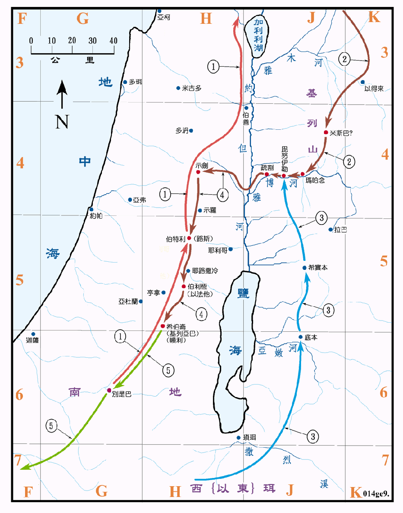

2066～1859BC

行动线说明
| 序号 | 圣经 | 说明 |
|---|---|---|
| 创25:26 | 雅各出生 (2006BC)。 | |
| 创27章 | 雅各骗得父亲对长子以扫的祝福。 | |
| 1 | 创27:43-29:1 | 雅各逃去哈兰 (1929BC)，在哈兰娶妻生子。(参看创图03) |
| 2 | 创31:3-32:1 | 雅各携眷返迦南 (1909BC)。 |
| 创32:24-31 | 雅各在毗努伊勒与天使摔跤后，改名叫以色列，并受天使的祝福。 | |
| 3 | 创33:1-16 | 以扫从西珥来和雅各相会。 |
| 4 | 创33:17-35:27 | 雅各迁往疏割，又搬去示剑，在示剑、西缅和利未杀了示剑人，他们再去伯特利，最后在希伯仑定居。 |
| 创42:1-45:15 | 因饥荒，令儿子们去埃及去籴粮，在埃及弟兄们相遇。 | |
| 5 | 创46:1-7，47:11-12 | 雅各一家人迁往埃及 (1876BC130 岁)，住在歌珊地，他们在那里置了产业，并且生养众多。(参看创图三) |
| 创48:1-20 | 雅各祝福约瑟的两个儿子以法莲和玛拿西，使成为两个支派。 | |
| 创49:33-50:13 | 雅各去世 (1859BC 147岁)，遗体运回希伯仑安葬。(参看创图11) |
雅各是以撒的次子，他用计买了他哥哥以扫长子的名分，又设法骗得到父亲给长子的祝福，因此以扫要杀他，於是他在三十五岁时去哈兰，在那里娶了利亚和拉结为妻，生了十一个儿子，五十五岁时带全家回迦南，在毗努伊勒时，神令他改名叫以色列。在以法他的路上又生了一子，在一百三十岁时移居埃及，十七年后去世，遗体运回希伯仑安葬，(往返的路线绘在<创图十一>)。当他在迦南时，多在南地一带活动。